第 28 章 机器学习
28.1 模型评价
28.1.1 分类任务
设真实标签 \(y\in\{1,\dots,r\}\)，模型预测为 \(\hat{y}\in\{1,\dots,r\}\)，对二分类问题可记正类为\(1\)，负类为\(0\)。
Definition 28.1. 混淆矩阵（confusion matrix）按真实标签与预测标签的组合统计样本个数，其每个元素含义如下：
真阳性（true positive）：真实为正类且预测为正类的样本数；
真阴性（true negative）：真实为负类且预测为负类的样本数；
假阳性（false positive）：真实为负类但预测为正类的样本数；
假阴性（false negative）：真实为正类但预测为负类的样本数。
Definition 28.2. 准确率（accuracy）度量模型预测正确的比例：
\[\begin{equation*} \operatorname{Accuracy}=\frac{\operatorname{TP}+\operatorname{TN}}{\operatorname{TP}+\operatorname{TN}+\operatorname{FP}+\operatorname{FN}}. \end{equation*}\]
Definition 28.3. 精确率（precision）度量被预测为正类的样本中有多少是真正的正类：
\[\begin{equation*} \operatorname{Precision}=\frac{\operatorname{TP}}{\operatorname{TP}+\operatorname{FP}}. \end{equation*}\]
note 28.1. 精确率关心正类预测结果的准确性，在系统对错误正类具有高成本的任务（如垃圾邮件过滤或癌症筛查）中尤为重要。较高的精确率意味着模型产生的误报较少。
Definition 28.4. 召回率（recall）又称灵敏度（sensitivity），衡量真实正类中有多少被模型成功识别，定义为：
\[\begin{equation*} \operatorname{Recall}=\frac{\operatorname{TP}}{\operatorname{TP}+\operatorname{FN}}. \end{equation*}\]
note 28.2. 召回率关注对正类的漏判率，适用于需要尽可能检出正类的场景（如疾病筛查或欺诈检测）。高召回率意味着漏报较少，但可能伴随较多假阳性，需要结合精确率来进行分析。
Definition 28.5. f1分数（f1 score）是精确率与召回率的调和平均，用于在二者之间取得平衡：
\[\begin{equation*} \operatorname{F1}=2\times\frac{\operatorname{Precision}\times\operatorname{Recall}}{\operatorname{Precision}+\operatorname{Recall}}. \end{equation*}\]
note 28.3. 调和平均的性质使\(\operatorname{F1}\)得分对低值敏感——当精确率或召回率其中之一很低时，\(\operatorname{F1}\)会显著下降，因此它常用作综合评价指标，适用于精确率和召回率同等重要的情形。
许多分类器输出的是连续得分或概率，样本得分或概率大于某一阈值即判断该样本为正类。通过调整阈值可以得到不同的预测结果。因此，可以考察阈值变化下的性能曲线，并使用曲线下的面积作为评价指标。
Definition 28.6. 称：
\[\begin{equation*} \operatorname{TPR}=\frac{\operatorname{TP}}{\operatorname{TP}+\operatorname{FN}},\quad \operatorname{FPR}=\frac{\operatorname{FP}}{\operatorname{FP}+\operatorname{TN}} \end{equation*}\]
Definition 28.7. 受试者工作特征曲线（receiver operating characteristic curve）为在\([0,1]\)内连续变化判别阈值\(t\)，对每个\(t\)计算对应的：
\[\begin{equation*} \operatorname{TPR}(t)=\frac{\operatorname{TP}(t)}{\operatorname{TP}(t)+\operatorname{FN}(t)},\quad \operatorname{FPR}(t)= \frac{\operatorname{FP}(t)}{\operatorname{FP}(t)+\operatorname{TN}(t)} \end{equation*}\]
然后以\(\mathrm{FPR}(t)\)为横轴、\(\mathrm{TPR}(t)\)为纵轴作图得到的曲线。受试者工作特征曲线下面积（area under ROC）定义为ROC曲线与\(\mathrm{FPR}(t)\)轴和\(\mathrm{FPR}(t)=1\)围成区域的面积。
note 28.4. ROC曲线反映了阈值变化对\(\operatorname{TPR}\)与\(\operatorname{FPR}\)的权衡。\(\operatorname{AUROC}\)独立于具体阈值，是比较不同模型总体区分能力的常用指标，取值范围通常在\([0.5,1]\)，\(0.5\)表示随机猜测（对任意的\(t\in[0,1]\)有\(\operatorname{FPR}(t)=\operatorname{TPR}(t)\)，模型判断正类为正类的概率和模型判断负类为正类的概率一致），\(1\)表示完美分类。
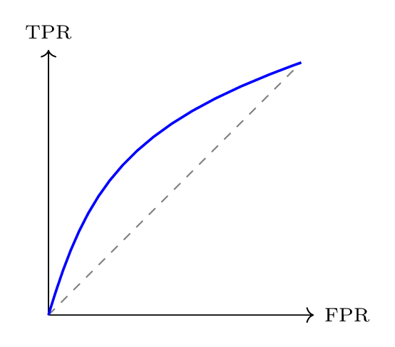
Definition 28.8. 精确率-召回率曲线（precision-recall curve）为在\([0,1]\)内连续变化判别阈值\(t\)（\(t\)从\(1\)取向\(0\)），对每个\(t\)计算对应的\(\operatorname{Precision}(t)\)和\(\operatorname{Recall}(t)\)，然后以\(\mathrm{Precision}(t)\)为横轴、\(\mathrm{Recall}(t)\)为纵轴作图得到的曲线。精确率-召回率曲线下面积（area under precision-recall curve）定义为PRC与\(\operatorname{Recall}(t)\)轴和\(\operatorname{Precision}(t)\)轴围成区域的面积。
note 28.5. 相比\(\operatorname{AUROC}\)，\(\operatorname{AUPRC}\)更关注正类的表现，因而在正负样本严重不平衡时更加敏感。较高的\(\operatorname{AUPRC}\)表明模型性能较好。
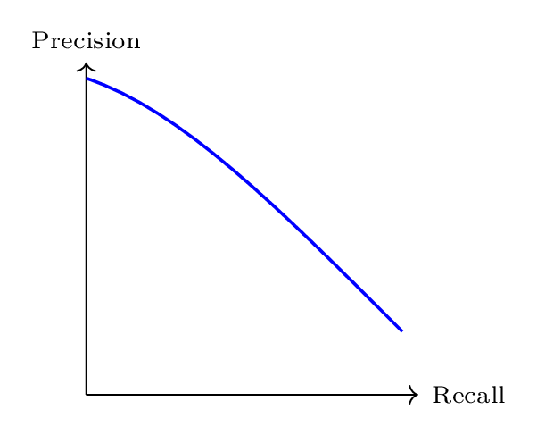
28.1.2 回归任务
设真实值为\(\{y_i\}_{i=1}^{n}\)，预测值为\(\{\hat{y}_i\}_{i=1}^{n}\)。
Definition 28.9. 称：
\[\begin{equation*} \operatorname{MAE}=\frac{1}{n}\sum_{i=1}^n|y_i-\hat{y}_i| \end{equation*}\]
note 28.6. MAE计算预测误差的绝对值并取平均，因而对所有误差赋予相同的线性权重。它具有易于解释、与原数据同量纲等优点，并对单个异常值不敏感。
Definition 28.10. 称：
\[\begin{equation*} \operatorname{MAPE}=\frac{1}{n}\sum_{i=1}^n\left|\frac{y_i-\hat{y}_i}{y_i}\right| \end{equation*}\]
note 28.7. MAPE 将误差按照真实值比例归一化，适合对预测误差的相对大小进行衡量。
28.1.3 过拟合与数据集划分
28.2 树模型
28.2.1 信息度量与分裂准则
28.2.1.1 信息量
Definition 28.11. 设\((X,\mathscr{A},P)\)为概率空间，\(f\)是\(X\)上的离散型随机变量，\(f\)的取值集合为\(\{x_n\}\)。称\(-\log[P(f=x_n)]\)为事件\(\{f=x_n\}\)的信息量（information quantity），记作\(I(f=x_n)\)。
note 28.8. 信息量定义中对数底的选择是任意的，但在信息论中普遍使用\(2\)作为对数的底。
为什么信息量这么定义呢？信息量应该具有如下两个性质：
一件事发生的概率越小，那么这件事发生后产生的信息量越大；
如果两件事情独立，那么这两件事情都发生所产生的信息量应该等于每件事情各自发生产生的信息量之和。
由(1)，\(I(f=x_n)\)需要与\(P(f=x_n)\)呈反比；由(2)，\(I(f=x_n)\)应具有对数的形式。
Definition 28.12. 设\((X,\mathscr{A},P)\)为概率空间，\(f\)是\(X\)上的离散型随机变量，\(f\)的取值集合为\(\{x_n\}\)。称\(H(f)=\operatorname{E}[I(f)]\)为\(f\)的信息熵（information entropy），由样本计算得到的信息熵被称为经验熵（empirical entropy），给定某一条件下的信息熵被称为条件熵（conditional entropy）。
Property 28.2.1. 设\((X,\mathscr{A},P)\)为概率空间，\(f\)是\(X\)上的离散型随机变量，\(f\)的取值集合为\(\{x_n\}\)。信息熵具有如下性质：
\(H(f)\geqslant0\)；
若\(f\)的取值集合为\(\{x_i\}_{i=1}^{n}\)，则当\(P(f=x_1)=P(f=x_2)=\cdots=P(f=x_n)\)时，\(H(f)\)取得最大值\(\log(n)\)。
证明. (1)由信息熵的定义立即可得。
(2)由于\(\log(\cdot)\)在\((0,+\infty)\)上为凹函数，根据不等式 19可得：
\[\begin{align*} H(f)&=\operatorname{E}[I(f)]=-\sum_{i=1}^{n}P(f=x_i)\log[P(f=x_i)]=\sum_{i=1}^{n}P(f=x_i)\log\left[\frac{1}{P(f=x_i)}\right] \\ &\leqslant\log\left[\sum_{i=1}^{n}P(f=x_i)\frac{1}{P(f=x_i)}\right]=\log(n) \end{align*}\]
上式取等当且仅当\(\dfrac{1}{P(f=x_i)}\)为常数，即\(P(f=x_1)=P(f=x_2)=\cdots=P(f=x_n)\)。 ◻
28.2.1.2 Gini系数
Definition 28.13. 设分类问题的类别空间为\(\mathcal{Y}=\{1,\dots,m\}\)，\(\mathcal{D}=\{(x_i,y_i)\}_{i=1}^n\)为观测样本集，其中\(y_i\in\mathcal{Y}\)表示第\(i\)个样本的真实类别，记\(p_i\)为第\(i\)类样本在\(\mathcal{D}\)中所占比例。称：
\[\begin{equation*} \operatorname{Gini}(\mathcal{D})=1-\sum_{i=1}^mp_i^2 \end{equation*}\]
为观测样本集\(\mathcal{D}\)的基尼指数（Gini index）。
Property 28.2.2. 设分类问题的类别空间为\(\mathcal{Y}=\{1,\dots,m\}\)，\(\mathcal{D}=\{(x_i,y_i)\}_{i=1}^n\)为观测样本集，其中\(y_i\in\mathcal{Y}\)表示第\(i\)个样本的真实类别，记\(p_i\)为第\(i\)类样本在\(\mathcal{D}\)中所占比例。Gini指数具有如下性质：
Gini指数是在样本集合中随机抽取两个样本时，它们属于不同类别的概率；
\(\operatorname{Gini}(\mathcal{D})\leqslant1-\dfrac{1}{m}\)，上式取等当且仅当\(p_1=\cdots=p_m=\dfrac{1}{m}\)。
证明. (1)显然。
(2)由不等式 1可得：
\[\begin{equation*} \sum_{i=1}^{m}1^2\sum_{i=1}^{m}p_i^2\geqslant\left(\sum_{i=1}^{m}p_i\right)^2=1 \end{equation*}\]
上式取等当且仅当\(p_1=\cdots=p_m=\frac{1}{m}\)，因此：
\[\begin{equation*} \operatorname{Gini}(\mathcal{D})=1-\sum_{i=1}^{m}p_i^2\leqslant1-\frac{1}{m} \end{equation*}\]
◻
note 28.9. 由性质 28.2.2(1)(2)可以看出Gini指数可以用来刻画样本类别分布的不纯度。当所有样本属于同一类别时\(\operatorname{Gini}(\mathcal{D})=0\)，表示完全纯净；当类别分布均匀时\(\operatorname{Gini}(\mathcal{D})\)达到最大值，表示类别混杂程度最高。
28.2.1.3 交叉熵
Definition 28.14. 设 \((X,\mathscr{A},P)\) 为概率空间，\(f\)为\(X\)上取值于有限集合 \(\{x_1,\dots,x_n\}\) 的离散型随机变量，其真实分布为：
\[\begin{equation*} p_i=P(f=x_i),\quad i=1,\dots,n \end{equation*}\]
另设\(q=(q_1,\dots,q_n)\)为定义在同一取值集合上的另一概率分布，满足\(q_i>0\)。称：
\[\begin{equation*} H(p,q)=-\sum_{i=1}^np_i\log q_i \end{equation*}\]
为分布\(p\)相对于分布\(q\)的交叉熵（cross entropy）。
Property 28.2.3. 设\(p=(p_1,\dots,p_n)\)与\(q=(q_1,\dots,q_n)\)为定义在同一有限集合上的概率分布，则\(H(p,q)\geqslant H(p,p)\)，上式取等当且仅当\(q_1=p_1,\dots,q_n=p_n\)
证明. 因为：
\[\begin{equation*} H(p,q)=-\sum_{i=1}^np_i\log q_i=-\sum_{i=1}^np_i\log\frac{q_i}{p_i}+\sum_{i=1}^np_i\log p_i \end{equation*}\]
并且\(\log(\cdot)\)在\((0,+\infty)\)上为凹函数，由不等式 19可知：
\[\begin{equation*} \sum_{i=1}^np_i\log\frac{q_i}{p_i}\leqslant\log\left[\sum_{i=1}^{n}p_i\frac{q_i}{p_i}\right]=0 \end{equation*}\]
上式取等当且仅当\(\dfrac{q_i}{p_i}\)为常数，即\(q_i=p_i\)。所以：
\[\begin{equation*} H(p,q)\geqslant\sum_{i=1}^np_i\log p_i=H(p,p) \end{equation*}\]
且当且仅当\(q=p\)时取等。 ◻
note 28.10. 由性质 28.2.3可知，交叉熵在所有概率分布\(q\)中以\(q=p\)为唯一最小值。因而最小化经验交叉熵等价于逼近真实分布\(p\)，这正是对数损失函数的理论基础。
28.2.2 决策树
算法 28.1 Classification and Regression Tree
Input: dataset \(\mathcal{D}\), feature set \(\mathcal{F}\), maximum depth \(D_{\max}\), minimum samples to split \(N_{\text{split}}\), minimum samples per leaf \(N_{\text{leaf}}\), minimum impurity decrease \(\Delta_{\min}\), criterion
Output: Decision tree node \(T\)
function BuildTree(\(\mathcal{D}, d\))
if \(|\mathcal{D}| < N_{\text{split}}\) or \(d = D_{\max}\) or all labels in \(\mathcal{D}\) are identical or no feature in \(\mathcal{F}\) exhibits variation on \(\mathcal{D}\) then
return a leaf node predicting the majority class with class distribution:
\[\begin{equation*} \left\{p_i=\frac{n_i}{|\mathcal{D}|}:n_i=|\{(x,y)\in\mathcal{D}:y=i\}|,\;i=1,2,\dots,m,\;m=\text{number of classes}\right\} \end{equation*}\]
or the constant minimizing the chosen criterion (for regression) on \(\mathcal{D}\)
end if
\(I_{\text{parent}}\gets\operatorname{NodeImpurity}\!\left(\mathcal{D}, \text{criterion}\right)\)（Compute parent node impurity）
\((F, \tau, I_{\text{split}}) \gets \operatorname{FindBestSplit}\!\left(\mathcal{D}, \mathcal{F}, \text{criterion}, N_{\text{leaf}}\right)\)（Search best binary split）
if \((F, \tau, I_{\text{split}})=\texttt{None}\) \(\Delta=I_{\text{parent}}-I_{\text{split}}<\Delta_{\min}\) then
return Leaf node with prediction and class distribution or constant
end if
\(\mathcal{D}_L \gets \{(x,y)\in\mathcal{D}:x[F]\leqslant\tau\}\), \(\mathcal{D}_R \gets \{(x,y)\in\mathcal{D}:x[F]>\tau\}\)
Initialize node \(T \gets \{\text{type: "node"}, \text{feature: } F, \text{threshold: } \tau, \text{impurity decrease: }\Delta\}\)
\(T.\text{left} \gets \operatorname{BuildTree}\!\left(\mathcal{D}_L, d+1\right)\), \(T.\text{right} \gets \operatorname{BuildTree}\!\left(\mathcal{D}_R, d+1\right)\)
return \(T\)
end function
return BuildTree(\(\mathcal{D}, 0\))
算法 28.2 Node Impurity Function
Input: node dataset \(\mathcal{D}\), criterion
Output: node impurity \(I(\mathcal{D})\)
\(n \gets |\mathcal{D}|\)
if criterion \(\in \{\texttt{gini}, \texttt{entropy}, \texttt{cross entropy}\}\) then （Classification impurity）
Let class label set be \(\{1,\dots,m\}\)
\(n_i \gets |\{(x,y)\in\mathcal{D}:y=i\}|\), \(p_i \gets \dfrac{n_i}{n}\)
if criterion = gini then
\(I(\mathcal{D}) \gets 1 - \sum\limits_{i=1}^m p_i^2\)
else if criterion = entropy or cross entropy then
\(I(\mathcal{D}) \gets - \sum\limits_{i=1}^m p_i \log p_i\)
end if
else if criterion \(\in \{\texttt{squared error}, \texttt{absolute error}\}\) then （Regression impurity）
if criterion = squared error then
\(\bar{y} \gets \dfrac{1}{n} \sum\limits_{(x,y)\in\mathcal{D}} y\), \(I(\mathcal{D}) \gets \dfrac{1}{n} \sum\limits_{(x,y)\in\mathcal{D}} (y-\bar{y})^2\)
else if criterion = absolute error then
\(m \gets \operatorname{median}\{y:(x,y)\in\mathcal{D}\}\), \(I(\mathcal{D}) \gets \dfrac{1}{n} \sum\limits_{(x,y)\in\mathcal{D}} |y-m|\)
end if
end if
return \(I(\mathcal{D})\)
算法 28.3 Find the Best Split
Input: dataset \(\mathcal{D}\), feature set \(\mathcal{F}\), criterion, minimum samples per leaf \(N_{\text{leaf}}\)
Output: best split \((F, \tau, I_{\text{split}})\) or None
Initialize: \(I_{\text{split}} \gets +\infty\), \((F,\tau) \gets \texttt{None}\)
for each feature \(F' \in \mathcal{F}\) do
if all samples in \(\mathcal{D}\) have identical values on \(F'\) then
continue （This feature cannot be split）
end if
Generate candidate thresholds \(\{\tau'\}\) from sorted unique values of feature \(F'\)
for each threshold \(\tau'\) do
\(\mathcal{D}_L \gets \{(x,y)\in\mathcal{D}: x[F']\leqslant\tau'\}\), \(\mathcal{D}_R \gets \{(x,y)\in\mathcal{D}: x[F'] > \tau'\}\)
if \(|\mathcal{D}_L| < N_{\text{leaf}}\) or \(|\mathcal{D}_R| < N_{\text{leaf}}\) then
continue （Violates min_samples_leaf）
end if
\(I_L \gets \operatorname{NodeImpurity}\!\left(\mathcal{D}_L, \text{criterion}\right)\), \(I_R \gets \operatorname{NodeImpurity}\!\left(\mathcal{D}_R, \text{criterion}\right)\)
\(I_{\text{split}}' \gets \dfrac{|\mathcal{D}_L|}{|\mathcal{D}|} I_L + \dfrac{|\mathcal{D}_R|}{|\mathcal{D}|} I_R\)
if \(I_{\text{split}}' < I_{\text{split}}\) then
\(I_{\text{split}}' \gets I_{\text{split}}\), \((F,\tau) \gets (F',\tau')\)
end if
end for
end for
if \((F,\tau) = \texttt{None}\) then
return None
else
return \((F,\tau, I_{\text{split}})\)
end if
上述算法基于分类回归树（classification and regression tree）框架，采用自顶向下的递归贪心策略生成二叉树结构。树的生长过程由函数BuildTree控制，并在每个节点通过搜索最优特征与阈值对\((F,\tau)\)实现二叉划分。
在节点生成阶段，算法设置了多重停止条件以限制树的复杂度，包括最大深度\(D_{\max}\)、最小可分裂样本数\(N_{\text{split}}\)、节点纯度一致性以及特征不可再分性等，从而实现预剪枝正则化并防止过拟合。
节点划分依据加权节点纯度最小化准则，通过最小化：
\[\begin{equation*} I_{\text{split}}=\frac{|\mathcal{D}_L|}{|\mathcal{D}|}I(\mathcal{D}_L)+\frac{|\mathcal{D}_R|}{|\mathcal{D}|}I(\mathcal{D}_R) \end{equation*}\]
选择最优划分，并要求纯度提升量\(\Delta=I_{\text{parent}}-I_{\text{split}}\)不小于给定阈值\(\Delta_{\min}\)。
当递归终止时生成叶节点。对于分类问题，叶节点预测为多数类并记录类别经验分布以支持概率输出；对于回归问题，叶节点预测为最小化所选损失函数的常数解。最终得到的决策树以递归结构表示，预测阶段沿节点划分路径自顶向下遍历直至到达叶节点获得预测结果。
此外，决策树模型还可以基于各特征在所有分裂节点上的纯度改进贡献得到特征重要性。在树的生长过程中，模型会不断选择能够最有效提升节点划分效果的特征进行分裂；某一特征若多次被用于关键节点划分，并且能够带来更明显的纯度提升，则说明该特征对样本区分和结果预测具有更重要的作用。通常将该特征在所有相关分裂节点上所产生的纯度提升量对节点样本数进行加权累计，并对所有特征的该统计量进行归一化处理，最终得到每一个特征的重要性得分。该得分越高，表明该特征在决策树模型中的作用越显著，对最终预测结果的影响也越大。在接下来的集成模型中，也可类似得到模型的特征重要性。
28.2.3 Bagging模型
Definition 28.15. 设\(\mathcal{D}=\{(x_i,y_i)\}_{i=1}^n\)为观测样本集，其中\(x_i\)为第\(i\)个样本的特征向量，\(y_i\)是第\(i\)个样本的标签或值，\(\mathcal{D}^{(1)},\mathcal{D}^{(2)},\dots,\mathcal{D}^{(B)}\)是从\(\mathcal{D}\)通过自助采样独立重复抽取的规模为\(n\)的训练子集，在每个子集\(\mathcal{D}^{(b)}\)上训练一个基学习器（base learner）\(f^{(b)}\)。袋装集成模型（bagging ensemble model）定义为各基学习器输出的聚合函数。对于回归问题，集成预测函数定义为简单平均；对于分类问题，集成预测函数定义为多数投票。
Property 28.2.4. 设在固定样本点\(x\)处，Bagging模型各个基学习器的预测为随机变量\(\{f^{(b)}(x)\}_{b=1}^B\)。Bagging模型具有如下性质：
若对任意\(b\)和\(b'\ne b\)有\(\operatorname{Var}(f_b)=\sigma^2\)且\(\operatorname{Corr}(f_b,f_{b'})=\rho\)，则Bagging模型预测的方差满足：
\[\begin{equation*} \operatorname{Var}[f_{\text{bag}}(x)]=\sigma^2\left(\rho+\frac{1-\rho}{B}\right) \end{equation*}\]
二分类多数投票情形下，若每个基分类器的错误率\(p<\dfrac{1}{2}\)，则在各分类器相互独立的假设下，Bagging 集成分类器的错误率随\(B\)指数下降；当基分类器之间存在正相关时，错误率下降速度受相关性限制，并趋于一个正值。
证明. (1)由性质 12.3.4(3)和性质 12.3.5(3)可知：
\[\begin{align*} \operatorname{Var}\left(f_{\text{bag}}(x)\right) &=\operatorname{Var}\left(\frac{1}{B}\sum_{b=1}^Bf_b\right)=\frac{1}{B^2}\left[\sum_{b=1}^B\operatorname{Var}(f_b)+2\sum_{1\leqslant b<b'\leqslant B}\operatorname{Cov}(f_b,f_{b'})\right] \\ &=\frac{1}{B^2}\left[B\sigma^2+B(B-1)\rho\sigma^2\right]=\sigma^2\left(\frac{1}{B}+\frac{B-1}{B}\rho\right) =\sigma^2\left(\rho+\frac{1-\rho}{B}\right) \end{align*}\]
(2)设二分类情形中类别为\(\{-1,1\}\)，样本\(x\)的真实类别为\(y\)，第\(b\)个基分类器的错误指示变量记为\(I_b=I[f^{(b)}(x)\ne y]\)。
若各分类器相互独立，则由条件和性质 12.4.1(1)可知：
\[\begin{equation*} P(I_b=1)=p<\dfrac{1}{2},\quad S_B=\sum_{b=1}^BI_b\sim\operatorname{Binomial}(B,p) \end{equation*}\]
且多数投票出错当且仅当\(S_B>B/2\)。根据定理 16.21可知当\(p<1/2\)时，Bagging模型出错的概率为：
\[\begin{equation*} P\left(S_B>\frac{B}{2}\right)=P\left(\frac{S_B}{B}-p\geqslant\frac{1}{2}-p\right)\leqslant\exp\left[-\frac{2B^2}{B}\left(\frac{1}{2}-p\right)^2\right]=\exp\left[-2B\left(\frac{1}{2}-p\right)^2\right] \end{equation*}\]
即Bagging的错误率随基学习器个数\(B\)指数级下降。
若误差之间满足\(\operatorname{Corr}(I_b,I_{b'})=\rho>0\)，则由性质 12.3.5(3)和性质 12.4.1(2)可知：
\[\begin{align*} \operatorname{Var}(S_B) &=\operatorname{Var}\left(\sum_{b=1}^BI_b\right)=\sum_{b=1}^B\operatorname{Var}(I_b)+2\sum_{1\leqslant b<b'\leqslant B}\operatorname{Cov}(I_b,I_{b'}) \\ &=Bp(1-p)+B(B-1)\rho p(1-p)=Bp(1-p)[1+(B-1)\rho] \end{align*}\]
根据性质 12.3.4(3)可得\(\operatorname{E}(S_B)=Bp\)。因为\(\operatorname{Var}(S_B)\sim B^2\rho p(1-p)(B\to+\infty)\)，于是由可知：
\[\begin{equation*} \frac{S_B-Bp}{\sqrt{B^2\rho p(1-p)}}\overset{d}{\longrightarrow}\operatorname{N}(0,1) \end{equation*}\]
所以：
\[\begin{align*} P\left(S_B>\frac{B}{2}\right)&=P\left(\frac{S_B-Bp}{\sqrt{B^2\rho p(1-p)}}>\frac{\frac{1}{2}-p}{\sqrt{\rho p(1-p)}} \right) \\ &\longrightarrow1-\Phi\left(\frac{\frac{1}{2}-p}{\sqrt{\rho p(1-p)}}\right)<1,\;(B\to+\infty) \end{align*}\]
◻
note 28.11. 根据性质 28.2.4(1)(2)，集成学习的有效性依赖于基学习器之间同时具备较高预测精度与足够的异质性（方差的第二项可由基学习器个数\(B\)来控制降低）。若所有基学习器高度相关，简单平均或投票并不能显著改善模型性能。
在 Bagging 框架中，异质性主要通过随机化机制引入：
样本层面的异质性：通过自助采样生成不同训练子集，使各基学习器在不同样本扰动下进行训练；
特征层面的异质性：对特征也进行自助采样，各基学习器仅在随机选取的特征子集上进行划分搜索。
此外，自助采样还自然诱导出袋外样本（out-of-bag）的概念。对于第\(b\)个基学习器，其训练集是从原始训练集自助采样得到的，因此总有一部分样本未被该次抽样选中，这部分样本称为该基学习器的袋外样本。由于这些样本未参与第\(b\)个基学习器的训练，故可用来对其进行近似的独立验证。进一步地，对每个训练样本，收集所有未使用该样本进行训练的基学习器所给出的预测，并进行平均或投票，即可得到该样本的OOB预测；将所有样本的OOB预测与真实响应比较，便可构造OOB误差估计。因而，OOB误差相当于Bagging方法内部自带的一种验证机制，可在不额外划分验证集的情况下评估模型的泛化性能。
28.2.4 Boosting模型
Definition 28.16. 设\(\mathcal{D}=\{(x_i,y_i)\}_{i=1}^n\)为观测样本集，其中\(x_i\)为第\(i\)个样本的特征向量，\(y_i\)是第\(i\)个样本的标签或值。Boosting通过顺序生成基学习器\(f^{(1)},f^{(2)},\dots,f^{(B)}\)来构造集成模型，其中每一步训练都基于前一步的拟合结果，对先前被错误预测的样本赋予更高关注，或对当前残差进行进一步拟合。提升集成模型（boosting ensemble model）定义为各基学习器输出的加权聚合函数。对于回归问题，集成预测函数通常定义为加权求和；对于分类问题，集成预测函数通常定义为加权投票。
28.2.4.1 GBDT
算法 28.4 Gradient Boosting Decision Tree
Input: training set \(\mathcal{D}_{\mathrm{train}}=\{(x_i,y_i)\}_{i=1}^n\), validation set \(\mathcal{D}_{\mathrm{val}}=\{(x_i^{(v)},y_i^{(v)})\}_{i=1}^{n_v}\), loss function \(\ell(y,F(x))\), number of boosting iterations \(B\), learning rate \(\eta\), early-stopping patience \(P\), tolerance \(\varepsilon\), tree-building parameters for BuildTree(\(\cdot\))
Output: Additive model \(F_{\hat{b}}(x)\)
Initialize the model prediction with a common output \(F_0(x)\) for all samples
For classification, this output is the empirical distribution of the training samples.
for regression, it is the constant minimizing the empirical loss on the training set.
\(\hat{b}\gets 0\), \(c_{\mathrm{stop}}\gets 0\), \(L_{\mathrm{best}}\gets +\infty\)
for \(b=1,2,\dots,B\) do
Compute pseudo-residuals for all training samples
\[\begin{equation*} r_{ib}\gets-\nabla\ell[y_i,F_{b-1}(x_i)], \quad i=1,2,\dots,n \end{equation*}\]
Fit a regression tree \(T_b\gets\operatorname{BuildTree}\!\left(\{(x_i,r_{ib})\}_{i=1}^n\right)\)
Let the leaf rigions of \(T_b\) be \(R_{1b},R_{2b},\dots,R_{J_bb}\)
for \(j=1,2,\dots,J_b\) do
Compute the optimal leaf output on region \(R_{jb}\)
\[\begin{equation*} \gamma_{jb}\gets \underset{\gamma\in\mathbb{R}}{\arg\min} \sum_{x_i\in R_{jb}} \ell[y_i,F_{b-1}(x_i)+\gamma] \end{equation*}\]
end for
Define the \(b\)-th base learner \(f_b(x)\gets\sum\limits_{j=1}^{J_b}\gamma_{jb}I(x\in R_{jb})\) and update the additive model \(F_b(x)\gets F_{b-1}(x)+\eta f_b(x)\)
Evaluate the validation loss \(L_b\gets \dfrac{1}{n_v}\sum\limits_{i=1}^{n_v}\ell[y_i^{(v)},F_b(x_i^{(v)})]\)
if \(L_b<L_{\mathrm{best}}-\varepsilon\) then
\(L_{\mathrm{best}}\gets L_b\), \(\hat b\gets b\), \(c_{\mathrm{stop}}\gets 0\)
else
\(c_{\mathrm{stop}}\gets c_{\mathrm{stop}}+1\)
end if
if \(c_{\mathrm{stop}}\geqslant P\) then
break
end if
end for
return \(F_{\hat{b}}(x)\)
28.2.4.2 XGBoost
XGBoost继承了Boosting模型和GBDT逐步加法优化的基本思想，但进一步对每一轮新增树的学习过程进行了更精细的刻画。
与传统GBDT主要关注经验损失的下降不同，XGBoost在目标函数中显式加入了对新增树复杂度的正则化惩罚，从而将第\(b\)轮的优化目标写为：
\[\begin{equation*} L^{(b)}=\sum_{i=1}^{n}\ell[y_i,F_{b-1}(x_i)+f_b(x_i)]+\Omega(f_b) \end{equation*}\]
其中，\(\Omega(f_b)\)表示对第\(b\)棵树复杂度的惩罚项，定义为：
\[\begin{equation*} \Omega(f_b)=\gamma|T_b|+\frac{1}{2}\lambda\sum_{j=1}^{J_b}w_{jb}^2 \end{equation*}\]
这里，\(|T_b|\)表示第\(b\)棵树的叶节点个数，\(w_{jb}\)表示第\(b\)棵树第\(j\)个叶节点的输出值，参数\(\gamma\)用于惩罚树结构过于复杂的情形，参数\(\lambda\)用于约束叶节点输出的大小，避免输出太激进。
由于直接对\(f_b\)进行优化仍然较困难，XGBoost在\(F_{b-1}(x_i)\)附近对损失函数作二阶近似。令：
\[\begin{equation*} g_{ib}=\left.\frac{\partial \ell(y_i,F)}{\partial F}\right|_{F=F_{b-1}(x_i)}, \quad h_{ib}=\left.\frac{\partial^2 \ell(y_i,F)}{\partial F^2}\right|_{F=F_{b-1}(x_i)} \end{equation*}\]
其中，\(g_{ib}\)和\(h_{ib}\)分别表示第\(i\)个样本在第\(b\)轮迭代时损失函数关于当前预测的一阶导数和二阶导数。于是由[缺失引用：theo:Taylor](1)有近似展开：
\[\begin{equation*} \ell[y_i,F_{b-1}(x_i)+f_b(x_i)]\approx\ell[y_i,F_{b-1}(x_i)]+g_{ib}f_b(x_i)+\frac{1}{2}h_{ib}f_b^2(x_i) \end{equation*}\]
将其代入\(L^{(b)}\)，得到：
\[\begin{equation*} L^{(b)}\approx\sum_{i=1}^{n}\left\{\ell[y_i,F_{b-1}(x_i)]+g_{ib}f_b(x_i)+\frac{1}{2}h_{ib}f_b^2(x_i)\right\}+\Omega(f_b) \end{equation*}\]
其中，\(\sum\limits_{i=1}^{n}\ell[y_i,F_{b-1}(x_i)]\)与当前轮新增树\(f_b\)无关，于是第\(b\)轮真正需要优化的目标可写为：
\[\begin{equation*} \tilde{L}^{(b)}=\sum_{i=1}^{n}\left[g_{ib}f_b(x_i)+\frac{1}{2}h_{ib}f_b^2(x_i)\right]+\Omega(f_b) \end{equation*}\]
接下来利用树模型的结构来化简目标函数。设第\(b\)棵树\(f_b\)将样本空间划分为\(J_b\)个叶节点区域\(R_{1b},R_{2b},\dots,R_{J_bb}\)，并且对落入第\(j\)个叶节点的样本统一输出\(w_{jb}\)。将样本按叶节点分组，记：
\[\begin{equation*} G_{jb}=\sum_{x_i\in R_{jb}}g_{ib}, \quad H_{jb}=\sum_{x_i\in R_{jb}}h_{ib} \end{equation*}\]
则有：
\[\begin{align*} \tilde{L}^{(b)}&=\sum_{j=1}^{J_b}\left(G_{jb}w_{jb}+\frac{1}{2}H_{jb}w_{jb}^2\right)+\gamma|T_b|+\frac{1}{2}\lambda\sum_{j=1}^{J_b}w_{jb}^2 \\ &=\sum_{j=1}^{J_b}\left[G_{jb}w_{jb}+\frac{1}{2}(H_{jb}+\lambda)w_{jb}^2\right]+\gamma|T_b| \end{align*}\]
于是最优叶节点输出和给定树结构下的最优目标值分别为：
\[\begin{equation*} w_{jb}^{\star}=-\frac{G_{jb}}{H_{jb}+\lambda},\quad\tilde{L}^{(b)\star}=-\frac{1}{2}\sum_{j=1}^{J_b}\frac{G_{jb}^2}{H_{jb}+\lambda}+\gamma|T_b| \end{equation*}\]
这个式子表明，一旦树的划分结构确定，叶节点权重可以显式求出，而且整棵树的优劣也可以直接由各叶节点上的\(G_{jb}\)与\(H_{jb}\)来衡量。进一步地，XGBoost在生成树时正是利用这一目标值来计算分裂增益，从而决定最优划分并判断一个结点是否值得继续分裂。
设在第\(b\)轮迭代中，当前有某个待分裂叶节点\(R\)，其对应的一阶与二阶统计量分别为：
\[\begin{equation*} G=\sum_{x_i\in R}g_{ib}, \quad H=\sum_{x_i\in R}h_{ib} \end{equation*}\]
如果该结点暂时不分裂，而是作为一个叶节点保留，则根据前述最优目标值公式，这个叶节点对目标函数的贡献为：
\[\begin{equation*} -\frac{1}{2}\frac{G^2}{H+\lambda}+\gamma \end{equation*}\]
现在考虑将该结点分裂为左、右两个子结点\(R_L\)与\(R_R\)。记它们各自的一阶与二阶统计量为：
\[\begin{equation*} G_L=\sum_{x_i\in R_L}g_{ib}, \quad H_L=\sum_{x_i\in R_L}h_{ib}, \quad G_R=G-G_L, \quad H_R=H-H_L \end{equation*}\]
显然有\(G=G_L+G_R,\;H=H_L+H_R\)。分裂之后，原来的一个叶节点变成两个叶节点，因此这两个子结点对目标函数的贡献之和为：
\[\begin{equation*} -\frac{1}{2}\frac{G_L^2}{H_L+\lambda} -\frac{1}{2}\frac{G_R^2}{H_R+\lambda} +2\gamma \end{equation*}\]
因此，分裂前后目标函数的变化量可写为：
\[\begin{align*} \Delta &= \left( -\frac{1}{2}\frac{G_L^2}{H_L+\lambda} -\frac{1}{2}\frac{G_R^2}{H_R+\lambda} +2\gamma \right) - \left( -\frac{1}{2}\frac{G^2}{H+\lambda} +\gamma \right) \\ &= -\frac{1}{2}\frac{G_L^2}{H_L+\lambda} -\frac{1}{2}\frac{G_R^2}{H_R+\lambda} +\frac{1}{2}\frac{G^2}{H+\lambda} +\gamma \end{align*}\]
由于我们希望目标函数尽可能小，因此只有当\(\Delta<0\)时，分裂才会使目标函数下降，也才是有利的分裂。
这就是XGBoost中用于评估一个候选分裂是否值得采用的分裂增益公式。XGBoost将树结构的生长过程直接纳入了统一的优化框架之中（GBDT是分开的），使得每一次分裂都具有明确的目标函数解释。
算法 28.5 Extreme Gradient Boosting
Input: training set \(\mathcal{D}_{\mathrm{train}}=\{(x_i,y_i)\}_{i=1}^n\), validation set \(\mathcal{D}_{\mathrm{val}}=\{(x_i^{(v)},y_i^{(v)})\}_{i=1}^{n_v}\), loss function \(\ell(y,\hat y)\), number of boosting iterations \(B\), learning rate \(\eta\), regularization parameters \(\lambda,\gamma\), early-stopping patience \(P\), tolerance \(\varepsilon\), tree-building parameters for BuildTree(\(\cdot\))
Output: Additive model \(\hat y_{\hat b}(x)\)
Initialize the model prediction with a common output \(F_0(x)\) for all samples
For classification, this output is the empirical distribution of the training samples.
for regression, it is the constant minimizing the empirical loss on the training set.
\(\hat b\gets 0\), \(c_{\mathrm{stop}}\gets 0\), \(L_{\mathrm{best}}\gets +\infty\)
for \(b=1,2,\dots,B\) do
Compute first- and second-order statistics for all training samples:
\(g_{ib}\gets \dfrac{\partial\ell(y_i,F)}{\partial F}\big|_{F=F_{b-1}(x_i)},\;h_{ib}\gets \dfrac{\partial^2\ell(y_i,F)}{\partial F^2}\big|_{F=F_{b-1}(x_i)},\;i=1,2,\dots,n\)
Fit a regression tree structure \(T_b\gets\operatorname{BuildTree}\!\left(\{(x_i,g_{ib},h_{ib})\}_{i=1}^n,\lambda,\gamma\right)\)
Let the leaf regions of \(T_b\) be \(R_{1b},R_{2b},\dots,R_{J_b b}\)
for \(j=1,2,\dots,J_b\) do
Compute aggregated statistics on region \(R_{jb}\)
\(G_{jb}\gets\sum\limits_{x_i\in R_{jb}}g_{ib},\quad H_{jb}\gets\sum\limits_{x_i\in R_{jb}}h_{ib}\)
Compute the optimal leaf output
\[\begin{equation*} w_{jb}\gets-\frac{G_{jb}}{H_{jb}+\lambda} \end{equation*}\]
end for
Define the \(b\)-th base learner \(f_b(x)\gets\sum\limits_{j=1}^{J_b}w_{jb}I(x\in R_{jb})\) and update the additive model \(F_b(x)\gets F_{b-1}(x)+\eta f_b(x)\)
Evaluate the validation loss \(L_b\gets\frac{1}{n_v}\sum\limits_{i=1}^{n_v}\ell[y_i^{(v)},F_b(x_i^{(v)})]\)
if \(L_b<L_{\mathrm{best}}-\varepsilon\) then
\(L_{\mathrm{best}}\gets L_b\), \(\hat b\gets b\), \(c_{\mathrm{stop}}\gets 0\)
else
\(c_{\mathrm{stop}}\gets c_{\mathrm{stop}}+1\)
end if
if \(c_{\mathrm{stop}}\geqslant P\) then
break
end if
end for
return \(F_{\hat b}(x)\)
28.2.5 工程优化
28.2.5.1 Histogram
Histogram方法的基本思想是：先用分位点将连续特征离散化为有限个bin，再仅在bin边界上搜索候选切分点，这一方法又分为全局和局部两种。
全局分位点是指，在训练开始前，基于整个训练集一次性计算每个特征的分位点，并固定分箱边界。此后所有样本都先被编码为bin编号，后续建树过程始终使用这套固定分箱。这样可以将原始连续特征的浮点存储转化为较小范围的整数存储，从而节省内存并提高切分搜索效率。
局部分位点是指，在树生长过程中，每次结点分裂后，仅基于当前结点内样本重新计算分位点，并重新定义该结点的分箱映射。局部分位点能够更贴合当前结点的局部数据分布，但需要在每次分裂后重新计算分位点，计算代价更高。
28.2.5.2 Column Block
在树模型训练中，主要计算开销之一在于对特征取值进行排序，候选分点计算需要排序，计算统计量需要排序，划分样本也需要排序。为避免重复排序，XGBoost将输入数据预先组织每一列从小到大排序的形式，并为每个取值记录其对应的样本索引。这样一来，由于每一列已经按特征值排序，无论是枚举分点还是计算统计量都只需对该列做一次线性扫描。
28.2.5.3 稀疏感知与缺失值处理
在实际数据中，一部分特征位置可能缺失，另一部分则在稀疏存储下未被显式记录。前者对应缺失值，后者对应稀疏值。二者的共同点在于：它们都不能像普通观测值那样直接用于当前特征上的切分搜索。
为此，XGBoost将稀疏值与缺失值统一处理。在评估某一特征的候选切分时，算法仅对取值已知的样本进行扫描，而将其余样本视为未观测部分，并分别比较其进入左子结点或右子结点时的目标函数增益，最终将增益更大的方向记为默认方向。因而，模型可以在训练过程中自适应地学习缺失值和稀疏值分配方式。
在代码实现上，若数据整体具有较强稀疏性，可直接以稀疏矩阵形式传入模型；若仅部分变量存在稀疏或缺失现象，则更适合保留通常的表格表示，并将相应位置显式记为missing。
28.3 K近邻模型
Definition 28.17. 设\(\mathcal{D}={(x_i,y_i)}_{i=1}^{n}\)为观测样本集，其中\(x_i\)为第\(i\)个样本的特征向量，\(y_i\)是第\(i\)个样本的标签或值。给定距离度量\(\rho\)以及整数\(k\geqslant1\)，对任意样本\(x\)，记其\(k\)个最近邻样本索引集合为：
\[\begin{equation*} \mathcal{N}_k(x)=\underset{S\subset\{1,\dots,n\},|S|=k}{\arg\min}\sum_{i\in S}\rho(x,x_i) \end{equation*}\]
则称如下规则为k近邻（k-nearest neighbours）模型：
分类情形：
\[\begin{equation*} \hat y(x)=\underset{c\in\mathcal{Y}}{\arg\min}{}\sum*{i\in\mathcal{N}_k(x)}\mathbf{1}(y_i=c) \end{equation*}\]
回归情形：
\[\begin{equation*} \hat y(x)=\frac{1}{k}\sum_{i\in\mathcal{N}_k(x)}y_i \end{equation*}\]
若进一步引入权重函数\(w_i(x)\)，则可得到加权KNN估计：
\[\begin{equation*} \hat y(x)=\sum_{i\in\mathcal{N}*k(x)}w_i(x)y_i,\qquad\sum*{i\in\mathcal{N}_k(x)}w_i(x)=1 \end{equation*}\]
其中权重通常取为距离的单调递减函数。
KNN属于一种基于实例(instance-based)的非参数学习方法，其核心思想是在局部邻域中进行统计决策。模型本身不存在显式训练阶段，计算复杂度主要集中在查询阶段的最近邻搜索，因此在高维数据中通常结合KD-Tree或Ball-Tree等空间索引结构以降低搜索成本。
28.4 核方法
Definition 28.18. 设\(X\)是空间，\(k:X\times X\to\mathbb{R}^{}\)被称为核函数（kernel function）。
若对任意的\(x_1,x_2\in X\)有\(k(x_1,x_2)=k(x_2,x_1)\)，则称\(k\)是对称核；
若对任意的\(x_1, x_2, \dots, x_{n}\in X\)和任意的\(a_1, a_2, \dots, a_{n}\in\mathbb{R}^{}\)有：
\[\begin{equation*} \sum_{i=1}^{n}\sum_{j=1}^{n}a_ia_jk(x_i,x_j)\geqslant0 \end{equation*}\]
则称\(k\)为半正定核。
Definition 28.19. 设\(X\)是空间，\(k:X\times X\to\mathbb{R}^{}\)。对任意的\(x_1, x_2, \dots, x_{n}\in X\)，称\(K=\Big(k(x_i,x_j)\Big)\in M_{n\times n}(\mathbb{R}^{})\)为\(n\)维核矩阵或Gram矩阵。
Definition 28.20. 设\(X\)是空间，\(k:X\times X\to\mathbb{R}^{}\)，\(Y\)是Hilbert空间。若存在\(\varphi:X\to Y\)使得对任意的\(x_1,x_2\in X\)有：
\[\begin{equation*} k(x_1,x_2)=\Big(\varphi(x_1),\varphi(x_2)\Big) \end{equation*}\]
则称\(\varphi\)是\(k\)关于\(Y\)的一个特征映射。
Theorem 28.1. 设\(X\)是空间，\(k:X\times X\to\mathbb{R}^{}\)，\(Y\)是Hilbert空间。若\(k\)存在关于\(Y\)的特征映射，则\(k\)是半正定核。
证明. 对任意的\(x_1, x_2, \dots, x_{n}\in X\)和任意的\(a_1, a_2, \dots, a_{n}\in\mathbb{R}^{}\)有：
\[\begin{align*} \sum_{i=1}^{n}\sum_{j=1}^{n}a_ia_jk(x_i,x_j)&=\sum_{i=1}^{n}\sum_{j=1}^{n}a_ia_j\Big(\varphi(x_i),\varphi(x_j)\Big)=\left(\sum_{i=1}^{n}a_i\varphi(x_i),\sum_{i=1}^{n}a_j\varphi(x_i)\right) \\ &=\left\|\sum_{i=1}^{n}a_i\varphi(x_i)\right\|^2\geqslant0 \end{align*}\]
◻
Definition 28.21. 若Hilbert空间\(Y\)是定义在\(X\)上的实值函数空间，则称\(Y\)为\(X\)上的Hilbert函数空间。
Definition 28.22. 设\(Y\)是\(X\)上的实Hilbert函数空间。若对任意的\(x\in X\)，泛函：
\[\begin{equation*} L_x:Y\to\mathbb{R}^{},\quad\forall\;f\in Y,\;L_x(f)=f(x) \end{equation*}\]
都是有界线性泛函，则称\(Y\)为\(X\)上的再生核Hilbert空间（reproducing kernel Hilbert space）。
Theorem 28.2. 若\(Y\)是\(X\)上的RKHS，则对于任意的\(x\in X\)，存在唯一的\(k_x\in Y\)使得对于任意的\(f\in Y\)有\(f(x)=(f,k_x)\)。
证明. 因为\(Y\)是\(X\)上的RKHS，所以对于任意的\(x\in X\)，泛函：
\[\begin{equation*} L_x:Y\to\mathbb{R}^{},\quad\forall\;f\in Y,\;L_x(f)=f(x) \end{equation*}\]
都是有界线性泛函。由定理 3.26(1)可知\(L_x\)是连续泛函，根据定理 3.33可知存在唯一的\(k_x\in Y\)使得对任意的\(f\in Y\)有\(L_x(f)=f(x)=(f,k_x)\)。 ◻
Definition 28.23. 设\(Y\)是\(X\)上的RKHS，\(x\in X\)。称满足对于任意的\(f\in Y\)有\(f(x)=(f,k_x)\)的\(k_x\in Y\)为\(x\)关于\(Y\)的再生核（reproducing kernel）。
note 28.12. 再生核族\(\{k_x:x\in X\}\)可导出核函数\(k(x_1,x_2)=k_{x_1}(x_2)\)。
Property 28.4.1. 设\(Y\)是\(X\)上的RKHS，\(k\)是\(Y\)上的再生核族\(\{k_x:x\in X\}\)导出的核函数，则：
对任意的\(x_1,x_2\in X\)有\(k(x_1,x_2)=(k_{x_1},k_{x_2})\)；
\(k\)是对称核；
\(k\)是半正定核；
证明. (1)取任意的\(x_1,x_2\in X\)，由定理 28.2可知\(k_{x_1},k_{x_2}\in Y\)，所以\(k_{x_1}(x_2)=k(x_1,x_2)=(k_{x_1},k_{x_2})\)。
(2)在(1)中其实有\(k_{x_1}(x_2)=k(x_1,x_2)=(k_{x_1},k_{x_2})=(k_{x_2},k_{x_1})=k_{x_2}(x_1)=k(x_2,x_1)\)。
(3)由定理 28.1立即可得。 ◻
Theorem 28.3. （Aronszajn Theorem）
设\(X\)是空间，\(k:X\times X\to\mathbb{R}^{}\)。\(k\)是半正定核当且仅当存在\(X\)上的再生核Hilbert空间\(Y\)，对任意的\(x\in X\)，\(k(x,\cdot)\)是\(x\)关于\(Y\)的再生核。
证明. (1)充分性：由性质 28.4.1(2)立即可得。 ◻
Theorem 28.4. （Representor Theorem）
设\(X\)是空间，\(k:X\times X\to\mathbb{R}^{}\)是半正定核，由定理 28.3，记\(Y\)是由\(k\)导出的\(X\)上的RKHS，\(\{(x_i,y_i)\}_{i=1}^{n}\)为训练样本。对于优化问题：
\[\begin{equation*} \min_{f\in Y}\Omega[f(x_1),f(x_2),\dots,f(x_n)]+\lambda||f||^2,\quad\lambda>0 \end{equation*}\]
其任一最优解\(f^*\)都可以表示为：
\[\begin{equation*} f(x)=\sum_{i=1}^{n}a_ik(x,x_i) \end{equation*}\]
其中\(a_i\in\mathbb{R}^{}\)。
证明. 由性质 1.1.5(1)，取\(Y\)的子空间：
\[\begin{equation*} Y_n=\operatorname{span}\{k_{x_1},k_{x_2},\dots,k_{x_n}\} \end{equation*}\]
由性质 1.1.5(2)、性质 3.4.4(2)和性质 3.2.5(1)可知\(Y_n\)是闭的。根据定理 3.28可知对任意的\(f\in Y\)，存在下述唯一的分解：
\[\begin{equation*} f=f_1+f_2,\quad f_1\in Y_n,\;f_2\in Y_n^{\perp} \end{equation*}\]
由性质 3.4.6(1)可知\(||f||^2=||f_1||^2+||f_2||^2\)。因为\(f_2\in Y_n^{\perp}\)，所以对任意的\(i=1,2,\dots,n\)有\(f_2\perp k_{x_i}\)，于是：
\[\begin{equation*} (f_2,k_{x_i})=f_2(x_i)=0 \end{equation*}\]
所以\(f(x_i)=f_1(x_i)\)，优化问题可被改写为：
\[\begin{equation*} \min_{f\in Y}\Omega[f_1(x_1),f_1(x_2),\dots,f_1(x_n)]+\lambda[||f_1||^2+||f_2||^2],\quad\lambda>0 \end{equation*}\]
若\(f^*\)是最优解，则\(f^*\)必然在\(Y_n\)中，否则\(f^*\)在\(Y_n\)上的正交投影对应的目标函数值一定比\(f^*\)对应的目标函数值小。 ◻
28.5 神经网络
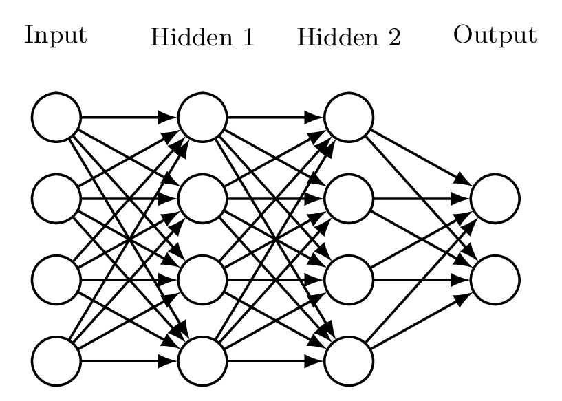
Definition 28.24. 若映射\(f_\theta:\mathbb{R}^m\rightarrow\mathbb{R}^n\)可以表示为若干线性变换与逐元素非线性映射的复合：
\[\begin{equation*} f_\theta(x)=\phi^{(L)}\!\circ \phi^{(L-1)} \circ \cdots \circ \phi^{(1)}(x) \end{equation*}\]
其中第\(l\)层映射\(\phi^{(l)}:\mathbb{R}^{n_{l-1}}\to\mathbb{R}^{n_l}\) 定义为:
\[\begin{equation*} \phi^{(l)}(z)=\sigma^{(l)}\!\left(W^{(l)}z+b^{(l)}\right),\quad l=1,2,\dots,L \end{equation*}\]
这里：
\(W^{(l)}\in\mathbb{R}^{n_l\times n_{l-1}}\) 为第 \(l\) 层的权重矩阵，
\(b^{(l)}\in\mathbb{R}^{n_l}\) 为偏置向量，
\(\sigma^{(l)}\) 为逐元素作用的非线性函数，
\(\theta=\{W^{(l)},b^{(l)}\}_{l=1}^L\) 为网络的全部可学习参数；
则称\(f_\theta\)为神经网络（neural network），非线性映射\(\sigma^{(l)}\)被称之为激活函数（activation function）。当\(L>2\) 时，位于输入层与输出层之间的各层称为隐藏层（hidden layer）。
note 28.13. 引入激活函数的原因有两点：
如果网络中所有层都是线性函数，则整个网络表示的是线性模型，增加深度不会提升表达能力（无论增加多少层，总能以一个线性映射来等价表示，即多层神经网络等价于一层）。
引入非线性函数可以使得模型有能力拟合非线性函数，
下面给出一些常见的激活函数。
Definition 28.25. 称函数：
\[\begin{equation*} \sigma(x) = \frac{1}{1+\exp(-x)} \end{equation*}\]
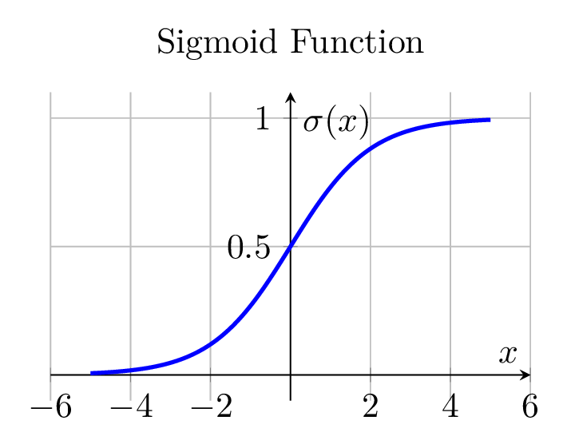
Definition 28.26. 称函数：
\[\begin{equation*} \tanh(x)=\frac{e^x - e^{-x}}{e^x + e^{-x}} \end{equation*}\]
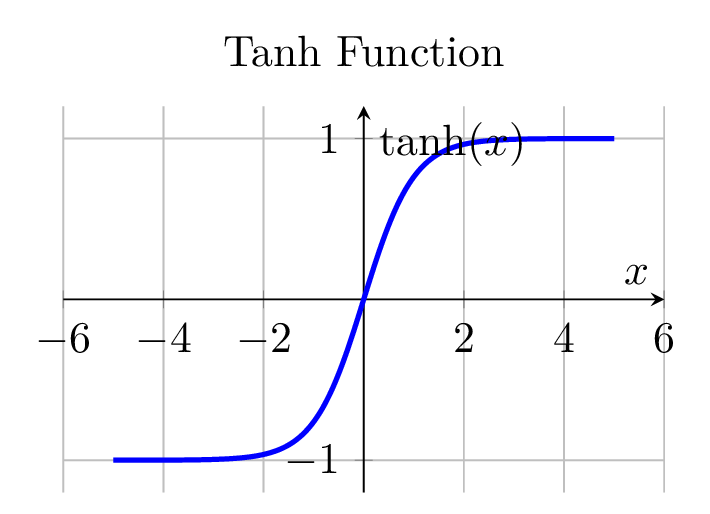
Definition 28.27. 称函数：
\[\begin{equation*} \sigma(x)=\max(0,x) \end{equation*}\]
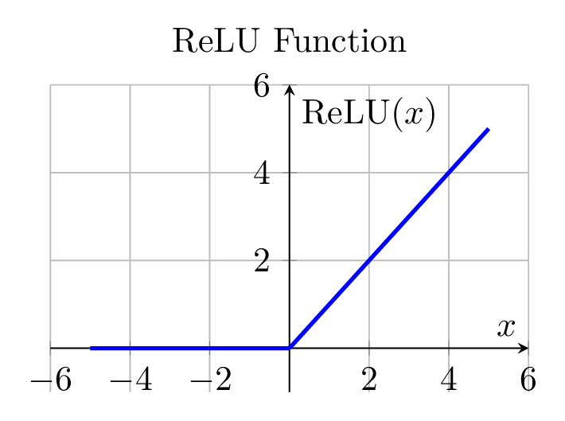
Definition 28.28. 称函数：
\[\begin{equation*} \sigma(x)= \begin{cases} x,& x>0 \\ \alpha x, & x\leqslant 0 \end{cases} \quad (\alpha>0 \text{为较小常数}) \end{equation*}\]
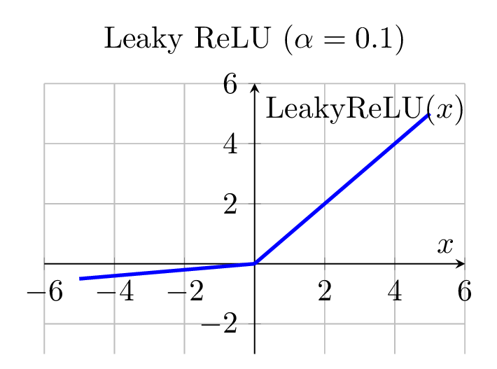
Definition 28.29. 称函数：
\[\begin{equation*} \sigma(x)= \begin{cases} x, & x>0 \\ \alpha(e^x-1), & x\leqslant 0 \end{cases} \end{equation*}\]
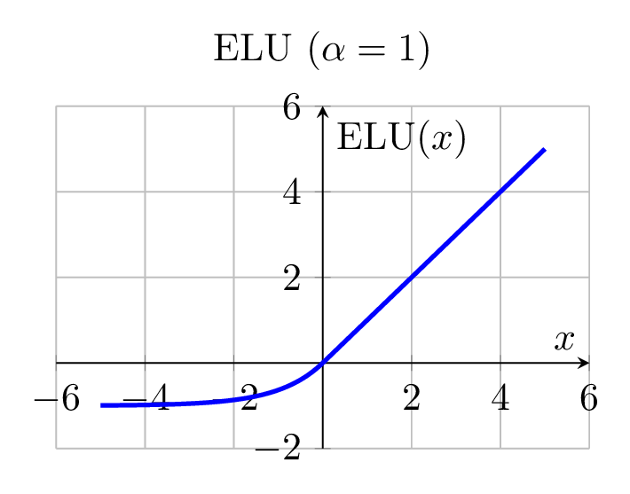
Definition 28.30. 设输入向量\(z=(x_1, x_2, \dots, x_{n})^\top\)，称映射：
\[\begin{equation*} \sigma(x)_i=\frac{e^{x_i}}{\sum\limits_{j=1}^ne^{x_j}}, \quad i=1,\dots,n \end{equation*}\]
28.5.1 模型学习
28.5.1.1 损失函数
Definition 28.31. 设观测样本集为\(\mathcal{D}=\{(x_i,y_i)\}_{i=1}^n\)，模型为函数\(f_\theta\)，记\(\hat{y}_i=f_\theta(x_i)\)。若函数\(L(y,\hat{y})\)用于衡量模型预测值与真实值之间差异，则称\(L\)为损失函数（loss function）。称：
\[\begin{equation*} \widehat{\mathcal{R}}(\theta)=\frac{1}{n}\sum_{i=1}^{n}L[y_i,f_\theta(x_i)] \end{equation*}\]
28.5.1.2 梯度下降
Definition 28.32. 梯度下降（gradient descent）指的是：在最小化目标函数\(f\)的优化问题中，每次迭代过程为在当前点\(x_t\)处沿负梯度方向\(-\operatorname{D}f(x_t)\)移动一小步。
Definition 28.33. 称正数\(\eta>0\)为学习率（LearningRate）。
note 28.14. 在第\(t\)次迭代中，参数更新通常写为：
\[\begin{equation*} \theta_{t+1}=\theta_t-\eta g_t \end{equation*}\]
其中\(g_t\)为当前点处目标函数关于参数\(\theta\)的梯度估计。
学习率决定了参数更新的幅度：\(\eta\)过大会导致算法发散或震荡，\(\eta\)过小则会使收敛速度显著变慢。
Definition 28.34. 设训练集为\(\mathcal{D}=\{(x_i,y_i)\}_{i=1}^n\)。称\(\mathcal{B}\subseteq\mathcal{D}\)为一个批（batch），\(|\mathcal{B}|\)被称作批大小（batch size）。
Definition 28.35. 称对整个训练集\(\mathcal{D}\)完整遍历一次的过程为一轮（epoch）。
算法 28.6 Batch Gradient Descent
Input: initial parameter \(\theta_0\), learning rate \(\eta\), number of iterations \(T\), training set \(\mathcal{D}\)
for \(t = 1,2,\dots,T\) do
Compute the empirical risk \(\widehat{\mathcal{R}}(\theta_t)\) on the whole dataset \(\mathcal{D}\)
Compute the full gradient \(g_t=\mathop{}\!\mathrm{d}\widehat{\mathcal{R}}(\theta_t)\)
Update the parameter:
\[\begin{equation*} \theta_{t+1} \gets \theta_t - \eta\, g_t \end{equation*}\]
end for
Return: final parameter estimate \(\theta_T\)
算法 28.7 Stochastic Gradient Descent (SGD)
Input: initial parameter \(\theta_0\), learning rate \(\eta\), number of iterations \(T\), training set \(\mathcal{D}=\{(x_i,y_i)\}_{i=1}^n\)
for \(t = 1,2,\dots,T\) do
Randomly sample one data point \((x_{i_t}, y_{i_t})\) from \(\mathcal{D}\)
Compute the stochastic gradient
\[ g_t = \mathop{}\!\mathrm{d}L[f(x_{i_t};\theta_t), y_{i_t}] \]
Update the parameter:
\[ \theta_{t+1} \gets \theta_t - \eta\, g_t \]
end for
Return: final parameter estimate \(\theta_T\)
算法 28.8 Mini-batch Gradient Descent
Input: initial parameter \(\theta_0\), learning rate \(\eta\), number of iterations \(T\), training set \(\mathcal{D}\), batch size \(B\)
for \(t = 1,2,\dots,T\) do
Randomly sample a mini-batch \(\mathcal{B}_t \subseteq \mathcal{D}\) with \(|\mathcal{B}_t| = B\)
Compute the mini-batch gradient
\[ g_t = \frac{1}{B} \sum_{(x_i,y_i)\in \mathcal{B}_t} \mathop{}\!\mathrm{d}L[f(x_i;\theta_t), y_i] \]
Update the parameter:
\[ \theta_{t+1} \gets \theta_t - \eta\, g_t \]
end for
Return: final parameter estimate \(\theta_T\)
28.5.2 序列网络
28.5.2.1 循环神经网络（Recurrent Neural Network, RNN）
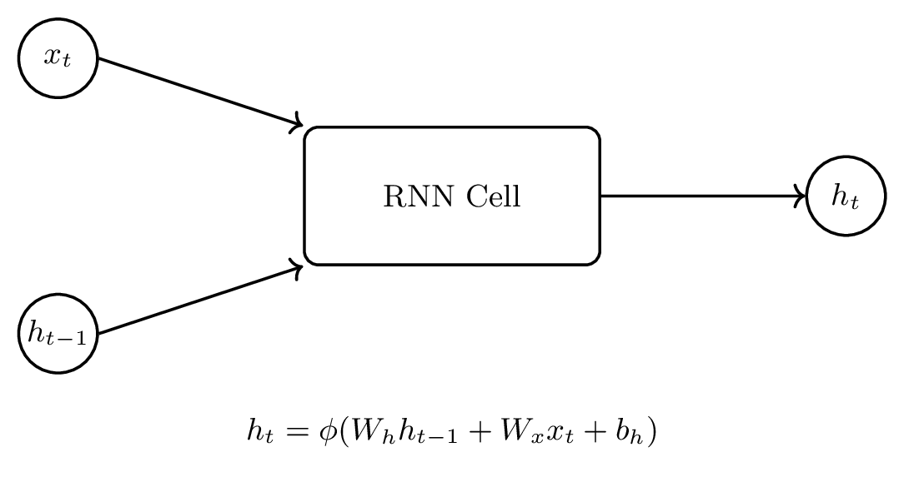
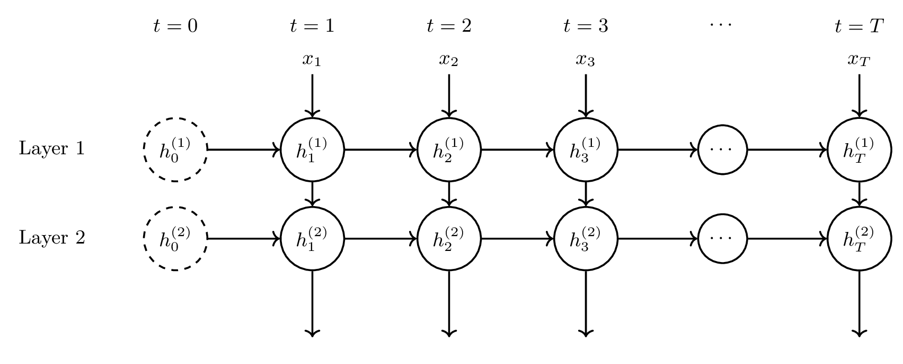
算法 28.9 Forward Propagation of a Multi-layer RNN
输入： Input sequence \(\{x_t^{(1)}\}_{t=1}^T\), parameters \(\{W_h^{(l)}, W_x^{(l)}, b_h^{(l)}\}_{l=1}^{L}\), activation functions \(\phi(\cdot)\)
输出： Hidden states \(\{h_t^{(L)}\}_{t=1}^{T}\)
Initialize hidden states \(h_0^{(l)} = \mathbf{0}\) for all \(l = 1,\dots,L\)
for \(t = 1\) to \(T\) do （Iterate over time steps）
for \(l= 1\) to \(L\) do （Iterate over layers）
if \(l\ne1\) then
\(x_t^{(l)} \gets h_t^{(l-1)}\)
（Output of previous layer as current input）
end if
\(h_t^{(l)} \gets \phi\left( W_h^{(l)} h_{t-1}^{(l)} + W_x^{(l)} x_t^{(l)} + b_h^{(l)} \right)\)
end for
end for
note 28.15. 由于隐藏状态不断累积先前信息，RNN 能够捕捉序列中的依赖关系。
28.5.2.2 长短期记忆网络（Long Short-Term Memory, LSTM）
算法 28.10 Forward Propagation of a Multi-layer LSTM
输入： Input sequence \(\{x_t^{(1)}\}_{t=1}^T\), parameters \(\{W_f^{(l)},W_i^{(l)},W_c^{(l)},W_o^{(l)},b_f^{(l)},b_i^{(l)},b_c^{(l)},b_o^{(l)}\}_{l=1}^{L}\)
输出： Hidden states \(\{h_t^{(l)}\}_{l=1}^{L}\) and cell states \(\{c_t^{(l)}\}_{l=1}^{L}\)
Initialize \(h_0^{(l)}=\mathbf{0},\; c_0^{(l)}=\mathbf{0}\) for all \(l=1,\dots,L\)
for \(t=1\) to \(T\) do
（Iterate over time steps）
for \(l=1\) to \(L\) do
（Iterate over layers）
if \(l\ne 1\) then
\(x_t^{(l)} \gets h_t^{(l-1)}\)
（Input from the previous layer）
end if
Forget gate: controls how much of \(c_{t-1}^{(l)}\) is retained
\[\begin{equation*} f_t^{(l)} \gets \sigma\!\left(W_f^{(l)}[h_{t-1}^{(l)},x_t^{(l)}]+b_f^{(l)}\right) \end{equation*}\]
Input gate: controls how much new information is written
\[\begin{equation*} i_t^{(l)} \gets \sigma\!\left(W_i^{(l)}[h_{t-1}^{(l)},x_t^{(l)}]+b_i^{(l)}\right) \end{equation*}\]
Candidate cell state: new content to be added
\[\begin{equation*} \tilde c_t^{(l)} \gets \tanh\!\left(W_c^{(l)}[h_{t-1}^{(l)},x_t^{(l)}]+b_c^{(l)}\right) \end{equation*}\]
Cell state update: forget old + write new
\[\begin{equation*} c_t^{(l)} \gets f_t^{(l)}\odot c_{t-1}^{(l)} + i_t^{(l)}\odot \tilde c_t^{(l)} \end{equation*}\]
Output gate: controls exposure of cell state
\[\begin{equation*} o_t^{(l)} \gets \sigma\!\left(W_o^{(l)}[h_{t-1}^{(l)},x_t^{(l)}]+b_o^{(l)}\right) \end{equation*}\]
Hidden state: gated and activated cell state
\[\begin{equation*} h_t^{(l)} \gets o_t^{(l)}\odot \tanh(c_t^{(l)}) \end{equation*}\]
end for
end for
note 28.16. 在LSTM中，由于sigmoid函数的值域为\((-1,1)\)，遗忘门、输入门、输出门分别给出了要对过往信息遗忘的比例、输入信息以往的比例、当前记忆输出的比例。而候选记忆与输出阶段采用 \(\tanh\)，则是为了将内部状态压缩到有界且零中心的区间 \((-1,1)\)，使得无论时间步有多长，内部状态都在一定范围之内，既保证了数值稳定性，又维持良好的梯度传播性质。
这种”线性记忆通道 + 门控比例调节 + 有界非线性输出”的结构，使得 LSTM 能够在长时间尺度上同时实现稳定记忆存储与灵活信息选择，是其优于普通RNN的核心原因。
28.5.2.3 门控循环单元（Gated Recurrent Unit, GRU）
算法 28.11 Forward Propagation of a Multi-layer GRU
输入： Input sequence \(\{x_t^{(1)}\}_{t=1}^T\), parameters \(\{W_z^{(l)},W_r^{(l)},W_h^{(l)},b_z^{(l)},b_r^{(l)},b_h^{(l)}\}_{l=1}^{L}\)
输出： Hidden states \(\{h_t^{(l)}\}_{l=1}^{L}\)
Initialize \(h_0^{(l)}=\mathbf{0}\) for all \(l=1,\dots,L\)
for \(t=1\) to \(T\) do
（Iterate over time steps）
for \(l=1\) to \(L\) do
（Iterate over layers）
if \(l\ne 1\) then
\(x_t^{(l)} \gets h_t^{(l-1)}\)
（Input from the previous layer）
end if
Update gate: controls how much of the past state is retained
\[\begin{equation*} z_t^{(l)} \gets \sigma\!\left(W_z^{(l)}[h_{t-1}^{(l)},x_t^{(l)}]+b_z^{(l)}\right) \end{equation*}\]
Reset gate: controls how much past information is ignored
\[\begin{equation*} r_t^{(l)} \gets \sigma\!\left(W_r^{(l)}[h_{t-1}^{(l)},x_t^{(l)}]+b_r^{(l)}\right) \end{equation*}\]
Candidate hidden state: new content to be written
\[\begin{equation*} \tilde h_t^{(l)} \gets \tanh\!\left(W_h^{(l)}[r_t^{(l)}\odot h_{t-1}^{(l)},x_t^{(l)}]+b_h^{(l)}\right) \end{equation*}\]
Hidden state update: interpolate between old and new
\[\begin{equation*} h_t^{(l)} \gets (1-z_t^{(l)})\odot h_{t-1}^{(l)} + z_t^{(l)}\odot \tilde h_t^{(l)} \end{equation*}\]
end for
end for
note 28.17. 与LSTM不同，GRU通过将细胞状态与隐藏状态合并为单一状态 \(h_t\)，并仅引入更新门与重置门对信息流进行控制，从而在保持长期依赖建模能力的同时，显著简化了模型结构与参数规模，但在表达能力与长期记忆精细控制方面略逊于LSTM。
28.5.3 图像网络
在计算机中，一幅图像本质上是一个规则网格上的数值函数。首先将连续的平面区域离散化为一个由\(H\times W\)个小方格组成的网格，每一个小方格称为一个像素（pixel），有序对\((H,W)\)称为图像的空间分辨率（spatial resolution）。像素是图像的最小空间单位，其空间位置通常用整数坐标\((p,q)\)表示，其中\(p=1,2,\dots,H,\;q=1,2,\dots,W\)。因此，一幅分辨率为\(H\times W\)的图像可以看作在离散网格 \(\{1,2,\dots,H\}\times\{1,2,\dots,W\}\) 上定义的数值函数。
对于灰度图像（就是黑白图片）而言，每个像素仅对应一个实数，用来描述该位置的强度。灰度强度刻画了该像素”有多亮”或”有多暗”，通常取值在某个区间内，例如：
\[\begin{equation*} I_{p,q} \in [0,255] \quad \text{或} \quad I_{p,q} \in [0,1] \end{equation*}\]
其中数值越大表示亮度越高，数值越小表示亮度越低。这样，一幅灰度图像可以用一个矩阵\(I\in M_{H\times W}(\mathbb{R}^{})\)来表示。
对于彩色图像，每个像素不仅具有亮度信息，还包含颜色信息。计算机中最常用的颜色表示方式是RGB模型，即用红色（Red）、绿色（Green）与蓝色（Blue）三种基色的强度线性组合来表示任意颜色。对应地，每一个像素不再是一个标量，而是一个三维向量，这三个分量分别称为三个通道（channel），表示该像素在R、G、B三种基色上的强度大小。
设图像的空间分辨率为\(H\times W\)，则一幅RGB彩色图像可以表示为一个三维张量：
\[\begin{equation*} I=(I_{p,q,c})\in\mathbb{R}^{H\times W\times3} \end{equation*}\]
其中\((p,q)\)表示像素的空间位置，\(c\in\{1,2,3\}\)分别对应红、绿、蓝三个颜色通道，\(I_{p,q,c}\)表示位于位置\((p,q)\)的像素在第\(c\)个通道上的灰度强度，即该颜色分量的亮度大小。
从矩阵的角度看，一幅彩色图像等价于三张大小为\(H\times W\)的灰度图像在通道维度上的叠加：
\[\begin{equation*} I=\big(I^{(R)},I^{(G)},I^{(B)}\big) \end{equation*}\]
其中：
\[\begin{equation*} I^{(R)},I^{(G)},I^{(B)}\in\mathbb{R}^{H\times W} \end{equation*}\]
分别表示红色通道、绿色通道与蓝色通道对应的灰度矩阵。
换言之，像素刻画空间位置，灰度强度刻画亮度大小，通道刻画颜色分量。
28.5.3.1 卷积
Definition 28.36. 设输入图像为\(X\in M_{H\times W}(\mathbb{R}^{})\)。在图像的每一个空间位置\((i,j)\)，取其邻域窗口：
\[\begin{equation*} \{(i+u-1,\; j+v-1) : u=1,\dots,h,\; v=1,\dots,w\} \end{equation*}\]
并对该邻域内的像素值施加一组固定权重\(K=(K_{u,v})\in M_{h\times w}(\mathbb{R}^{})\)，定义局部加权求和
\[\begin{equation*} S_{i,j}=\sum_{u=1}^h\sum_{v=1}^wK_{u,v}X_{i+u-1,j+v-1} \end{equation*}\]
由此在整个空间网格上得到的二维数组\(S=(S_{i,j})\)称为由该局部加权算子产生的特征图（feature map）。
Definition 28.37. 称矩阵\(K=(K_{u,v})\in M_{h\times w}(\mathbb{R}^{})\)为卷积核（convolution kernel）。
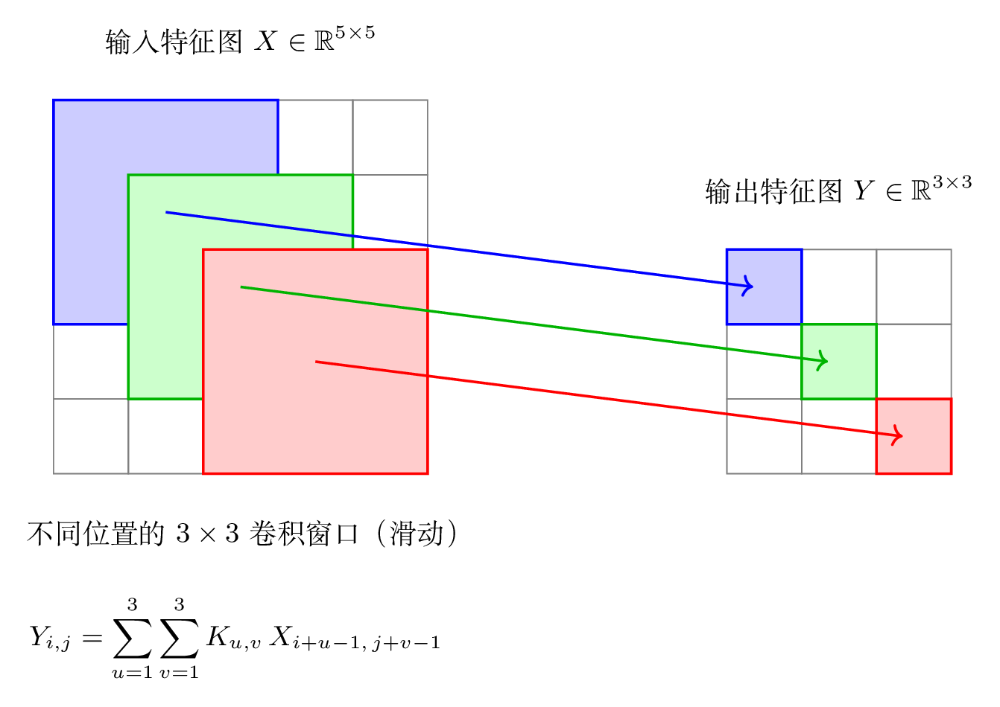
note 28.18. 特征图可以理解为：由原始图像通过某种局部加权求和得到的新的二维图像，其每个像素表示某种”特征”的强弱。
28.5.3.2 池化
Definition 28.38. 设输入特征图为\(X \in M_{H \times W}(\mathbb{R})\)。给定窗口尺寸\((h,w)\)以及步幅\((s_h, s_w)\)。在输出位置\((i,j)\)处，取像素空间位置邻域窗口：
\[\begin{equation*} W_{i,j}=\bigl\{\, (\, (i-1)s_h + u,\; (j-1)s_w + v \,) : u=1,\dots,h,\; v=1,\dots,w \,\bigr\} \end{equation*}\]
并在该邻域内对像素值施加一个映射\(P:\mathbb{R}^{h\times w}\to \mathbb{R}\)，称\(P\)为池化算子（pooling operator），该操作称为Poolig。
note 28.19. 卷积只能是局部加权，其主要作用为特征提取与线性滤波，通过可学习权重检测局部模式，而池化则对应着一般的函数，功能为空间降采样。
常见池化函数有：
最大池化：在窗口内取最大值。
平均池化：在窗口内取均值。
28.5.3.3 填充
在上述卷积与池化定义中，邻域窗口\(W_{i,j}\)可能在靠近边界时超出输入特征图\(X\)的定义域。为使边界位置也能应用同样的局部算子，通常在输入矩阵四周引入padding。在卷积与池化中，所有邻域窗口\(W_{i,j}\)实际均作用在扩展特征图\(\tilde{X}\)上。
28.5.3.4 CNN
卷积神经网络（convolutional neural network）是一类专门用于对网格结构数据进行分类的神经网络模型，在计算机视觉、医学影像分析以及模式识别等领域得到了广泛应用。其核心思想是通过局部连接、权值共享以及层级化特征学习机制，在保持参数规模可控的同时，有效建模输入数据中的空间局部相关性与层级结构信息。
典型的卷积神经网络由特征提取阶段和分类阶段两部分组成。特征提取阶段由 \(L\) 个堆叠的特征提取块构成，每一块通常包含卷积层、非线性激活函数以及池化层，用于逐层从原始输入中提取由低级到高级的层级化表示。卷积层通过局部加权运算提取空间局部模式，激活函数引入非线性变换，而池化层则通过降采样操作增强模型的平移不变性并降低特征分辨率。
在完成多层特征抽取之后，网络进入分类阶段。该阶段首先将高维特征图展平成一维向量，并通过若干全连接层对特征进行全局整合，最终由Softmax层输出关于各类别的预测概率。
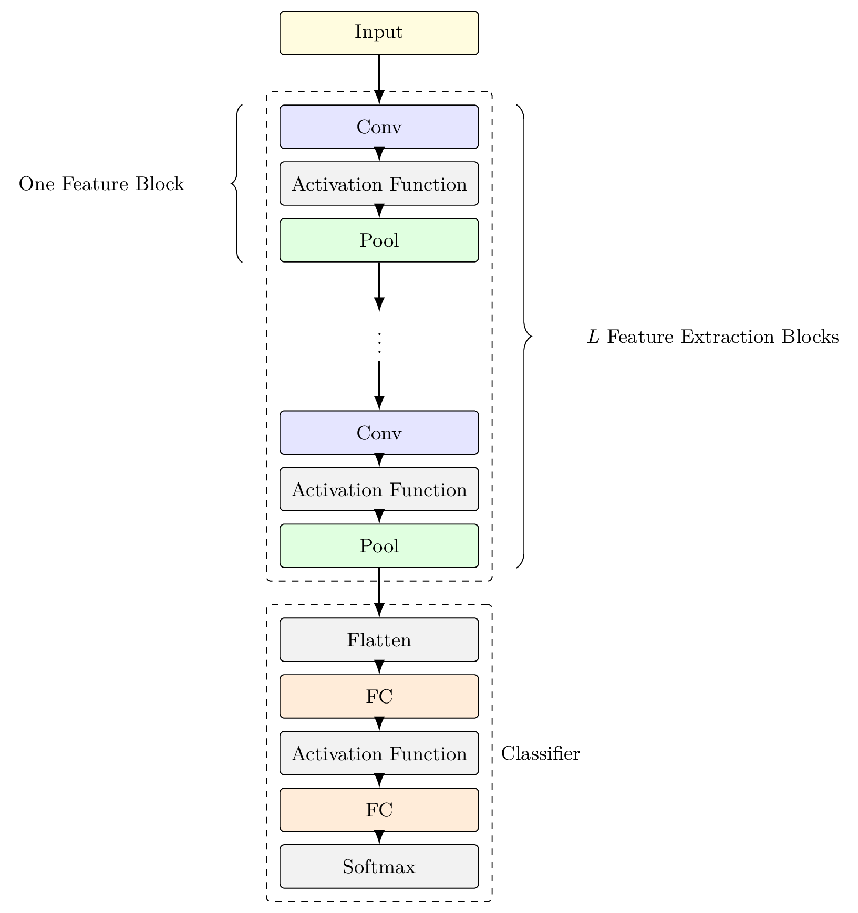
（Typically midpoints between consecutive distinct values）